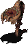
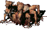

San Francisco
Description
San Francisco is certainly the most interesting non protected town in the game. Firstly the most important thing - although you can find here many NPC's guards, they really don't care about you. They will protect only other NPCs. This means that you're on your own in this town - better come here prepared! Why would you want to come here in the first place? Well, on top of my head I can give you several reasons. Firstly many wastelanders visit this town for its shops, there is many of them, all of them are spawning a lot of caps and a lot of top items. San Francisco Doctor together with Renesco in New Reno are only two shops in game that can spawn premium drugs like buffout, jet or psycho (well starting off season 3 it is not as important as it was in previous season when getting drugs were a bit harder but even today San Francisco Drug shop is on "must be visited" list of places for any player-trader. Second reason is wisdom - if you need Armorer level 3 or Chemist level 2 profession you must visit this town. Third reason, is the mini dungeon located in the Tanker's docks. Fun fact about this place - it is probably only one dungeon in whole place that is easier to do alone than with friends, as more people go down below the more floaters and centaurs attacks explorers on the start. Fourth reason? Base. An very cool base map is being sold here for mere 50k caps (The underground basement). Finally the fifth and perhaps the most important thing you can do here is the implant installation process. Only here by paying 50k you can install your acquired cybernetic implant, found through the fire and brimstone. Oh there is also a sixth reason - since there is a lot of players coming here some players will simple come here to kill the other visitors. FOnline 2 world truly is a harsh place to trade or learn crafting professions.
San Francisco hosts some automatic events: Big Drugs Sale-out and Big Books Sale-out both of this events are perfect occasion to either get rich or get murdered by player killers.
IN CONCLUSION: San Francisco is possibly the most interesting town in both it's signature dynasty design and the many, many events it runs. Making it quite the popular PvP zone and one of the main trading location for any sophisticated trader looking for supplies. If you are one of the many traveling merchants, be sure to pack a gun, supplies you're to sell and armor for protection, because as the quote goes: "Have faith in a good gun"
Town maps
San Franscico is being consisted of many areas. Some of them are full of NPCs, others are totally empty.
Points of interest
Downtown
- 1 - A trader. spawns top stuff and a lot of caps.
- 2 - The workbench location.
- 3 - Dr. Fung, an NPC doctor. He also sells chemical components and is a level 2 chemist teacher.
- 4 - A trader. Just like the other trader on this map, this one also spawns a lot of caps.
- 5 - Brotherhood of Steel Guardhouse.
- 6 - Edwin. He can sell you a ruined basement base map. It costs 50 000 caps.
- 7 - A passage to the docks area.
- 8 - Main passage grid to the docks area.
- 9 - A passage to the Hubologist area.
- 10 - A passage to the Palace.
BoS Guardhouse
So far this place is useless.
Shuttle Zone
- 1 - Shuttle. While useless this is still a nice object isn't it?
- 2 - Entrance. to Hubologists base.
Hubologists Base
- 1 - A scientist selling energy transformers for 1000 caps each.
- 2 - Alberto Unpiedra, a level 3 scientist teacher.
The Palace
It's an almost empty place with only one interesting NPC and an pc where you can install implants.
- 1 - A scientist buying pre-war electronic parts.
- 2 - PC console, you can use it install implants (for 50 000 caps).
Docks
- 1 - Green Goo ouch! Don't stand on it!
Tanker's main level:
It's a medium sized location with multiple merchants.
- 1 - A passage to the docks.
- 2 - Stairs leading to the lower holds. Entry A.
- 3 - Stairs leading to the lower holds. Entry B.
- 4 - A trader. He is offering some caps and other stuff.
- 5 - Trader Buck. Besides being a trader, he also can mark the Poseidon gas station on your PipBoy worldmap and he teaches the level 3 armorer profession.
- 6 - A trader. Just a minor bar trader.
- 7 - A passage to tanker's command center.
- 8 - A book shop. Here you can buy limitless amount of books through dialog. Each of them costs 3000 caps, except for the Outdoorsman and First Aid books, which cost 4000 caps. Since the price is high and the shop is located in an unprotected area, it is recommended to resort to this only if other options have failed.
Tanker's Command Center:
An empty location.
Tanker's Holds:
This place is filled with floaters and centaurs. There is also one special centaur that's worth 6000 experience points - pretty sweet, right?! But be very careful, since this is not an easy task. It is possible to explore this place solo, but only with a high level Big Gun character. However, it still remains a high risk area, since NPC enemies are very strong and next to that you have to worry about other players who tend to regularly visit this place.
Strategy tip: use stairs B and quickly run to the boxes on left side. That way only one or two of the NPC enemies will be able to reach you at once, while you can burn them all with flamer or other AoE type weapon. The entire group of critters except for Aberration and some marauders will come swarming down on that position. Once you're done with them Aberration itself is lurking in the top right side corner, busy with guarding the containers.
- 1 - Stairs leading to the main level of tanker (A).
- 2 - Stairs leading to the main level of tanker (B).
- C - Containers (no lockpick skill needed).
Enemies in Holds
| Floater | Vital Statistics | Resistances (DT/DR) | Notes | ||||||||||||||||||
|---|---|---|---|---|---|---|---|---|---|---|---|---|---|---|---|---|---|---|---|---|---|
|  |
|
|
Kill it with fire! (Watch out this critter attack's will cause poison and radiation.) | ||||||||||||||||||
| Centaur | Vital Statistics | Resistances (DT/DR) | Notes | ||||||||||||||||||
|---|---|---|---|---|---|---|---|---|---|---|---|---|---|---|---|---|---|---|---|---|---|
|  |
|
|
Just like in Floaters case, centaurs also seems to be weak against fire weapons. (Watch out this critter attack's will cause poison and radiation.) | ||||||||||||||||||
| Mean Centaur | Vital Statistics | Resistances (DT/DR) | Notes | ||||||||||||||||||
|---|---|---|---|---|---|---|---|---|---|---|---|---|---|---|---|---|---|---|---|---|---|
|
|
Upgraded version of centaurs. They are well know for not saying: "Good day" to wastelanders. So mean! (Watch out this critter attack's will cause poison and radiation.) | |||||||||||||||||||
| Aberration | Vital Statistics | Resistances (DT/DR) | Notes | ||||||||||||||||||
|---|---|---|---|---|---|---|---|---|---|---|---|---|---|---|---|---|---|---|---|---|---|
|
|
A Local boss of Tanker Holds. It's resistances compared to mean centaurs are kind of weak but he does have much much more hit points and base critical chance boosted into skies. (Watch out this critter attack's will cause poison and radiation.) | |||||||||||||||||||
and ALSO:
| Deathclaw Eggs | Vital Statistics | Resistances (DT/DR) | Notes | ||||||||||||||||||
|---|---|---|---|---|---|---|---|---|---|---|---|---|---|---|---|---|---|---|---|---|---|
|
|
They might not be hostile right now but they're watching you. Who knows what will happen if you left them behind... | |||||||||||||||||||
| Fonline 2 Locations: | ||
|---|---|---|
| Towns: | * Boneyard * Broken Hills * The Den * Gecko * Junktown * Klamath * Modoc * New Reno * Redding * San Francisco * Shady Sands * The Hub * Vault City | |
| Dungeons: | * Ares * Toxic Caves * Vault 15 * Sierra Army Depot * Warehouse * Necropolis * Vault 12 * The Glow * Tanker's Holds * Mariposa Military Base * Cathedral | |
| Others: | * Caravan Depot * Brotherhood of Steel HQ * Navarro * Gas Station * Alcatraz * Unknow Residence * RocketBall | |